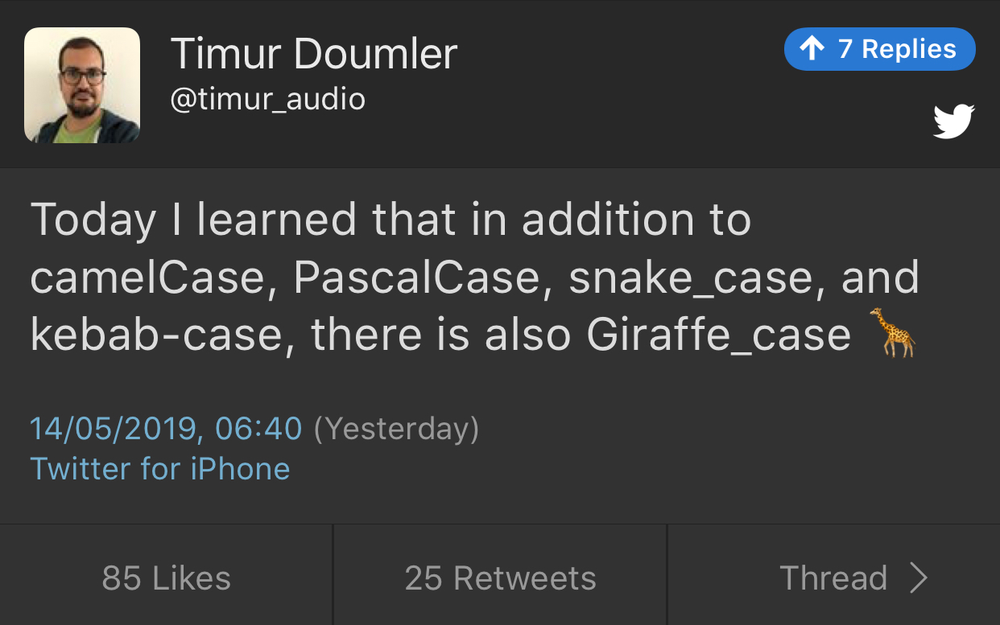

2019-05-23
Barry Revzin: https://brevzin.github.io/c++/2018/09/01/quirks-ctad/
What is the intent behind the declaration of variable x? Are we constructing a new thing (the CTAD goal) or are we using std::tuple as annotation to ensure that x is in fact a tuple (the Concepts goal)?
A clearer example:
// The tuple case
// unquestionably, tuple<int>
std::tuple a(1);
// unquestionably, tuple<tuple<int>,tuple<int>>
std::tuple b(a, a);
// ??
std::tuple c(a);https://github.com/p-groarke/clamp_cast
A narrowing cast that does the right thing. clamp_cast will saturate output values at min or max if the input value would overflow / underflow.
double ld = -42.0;
unsigned char uc = clamp_cast<unsigned char>(ld);
// uc == 0
float f = 500000.f;
char c = clamp_cast<char>(f);
// c == 127Philippe M. Groarke: https://philippegroarke.com/posts/2018/c++_ui_solutions/
Reddit:
Modern UI in C++ https://www.reddit.com/r/cpp/comments/b3s2zq/modern_ui_in_c/
https://www.reddit.com/r/cpp/comments/9s34p9/c_experts_what_advice_would_you_give_to_a_new_c/
https://www.reddit.com/r/cpp/comments/bgdawr/what_are_some_things_commonly_taught_in_c_that/
using namespace std; #protected. Where author of base class assumes you will correctly fiddle with protected members. #https://www.reddit.com/r/cpp/comments/aoidsi/what_is_the_solution_for_same_function_parameters/
Before:
https://www.reddit.com/r/cpp/comments/aoidsi/what_is_the_solution_for_same_function_parameters/
After:
template<class F> struct Auto : F {
// conversion operator
template<class T> operator T() {
return F::template operator()<T>();
}
};
template<class F> Auto(F) -> Auto<F>; // deduction guidehttps://www.reddit.com/r/cpp/comments/aoidsi/what_is_the_solution_for_same_function_parameters/
After:
template<class... A>
auto fooWrapper(A&&... a) {
return Auto{[&]<class T>() { return foo<T>(std::forward<A>(a)...); }};
};
template<class... A>
auto fooWrapper(int i) {
return Auto{[=]<class T>() { return foo<T>(i); }};
};
double d = fooWrapper(42);https://vorbrodt.blog/2019/04/06/data-alignment-the-c-way/
Before modern C++:
Now:
https://www.reddit.com/r/cpp/comments/b9xb3n/its_2019_we_have_the_power_of_constexpr_and/
https://github.com/Neargye/nameof
See also: CTTI https://github.com/Manu343726/ctti
It is used by the brand new Terminal App. That alone is an indication of effort.
